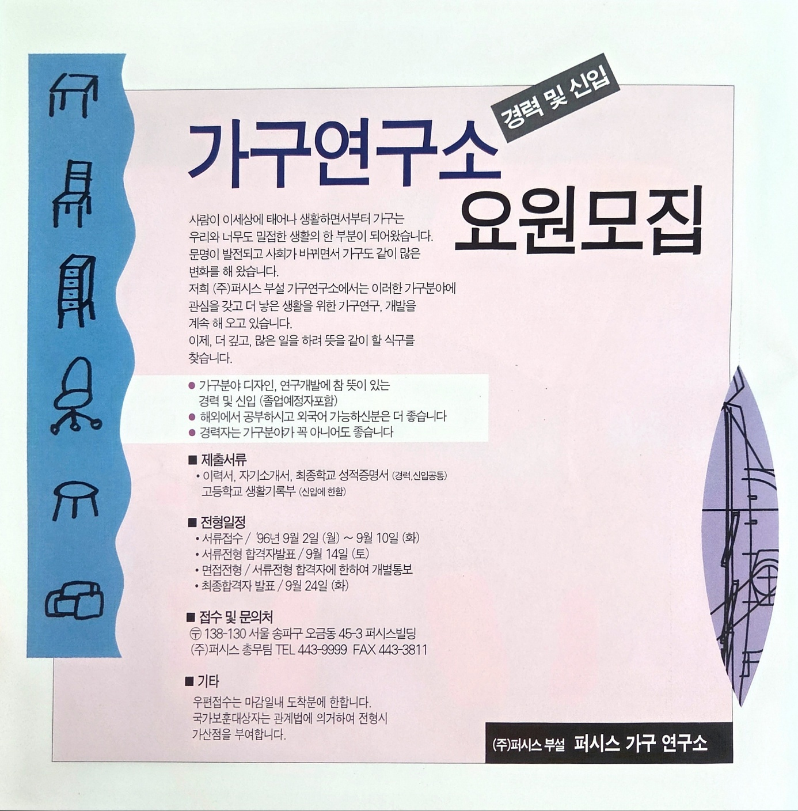
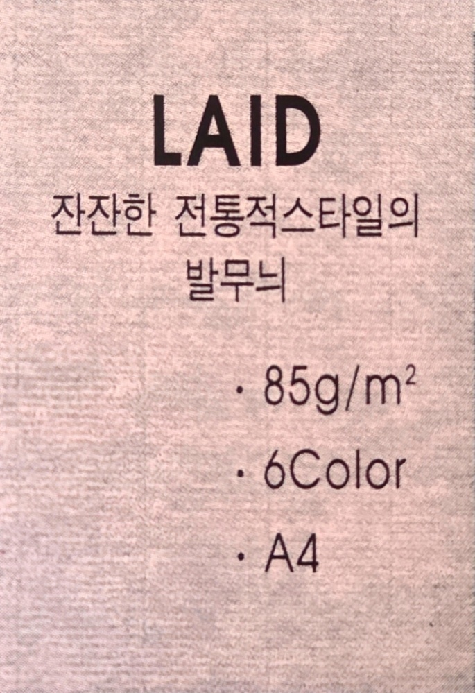
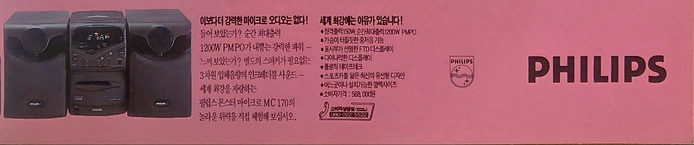
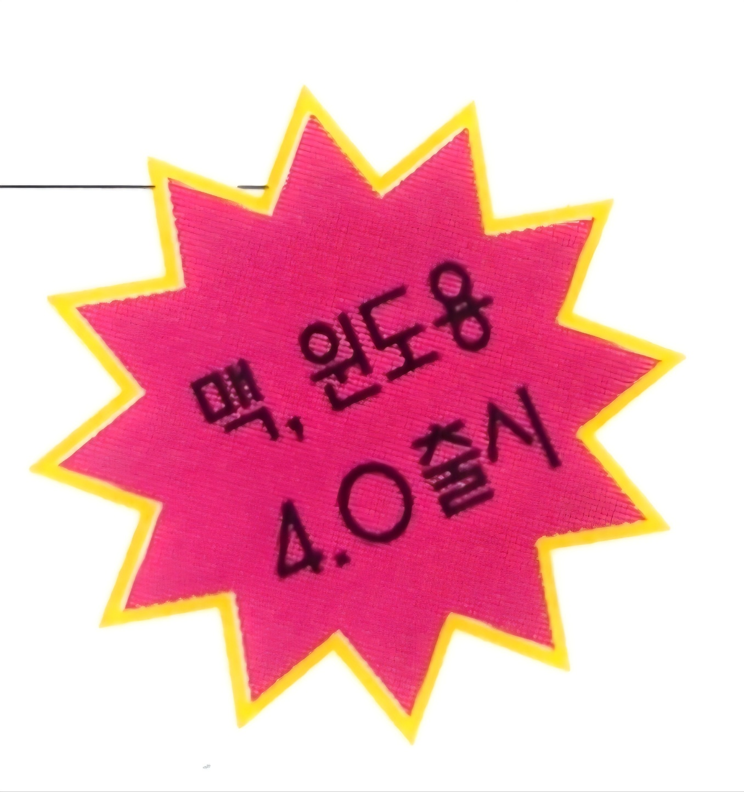
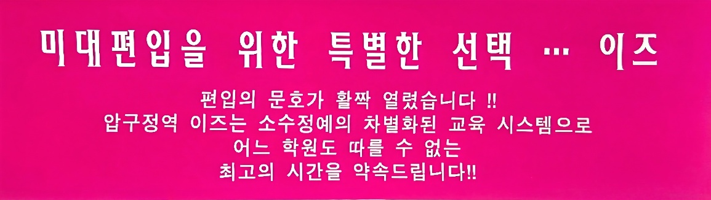
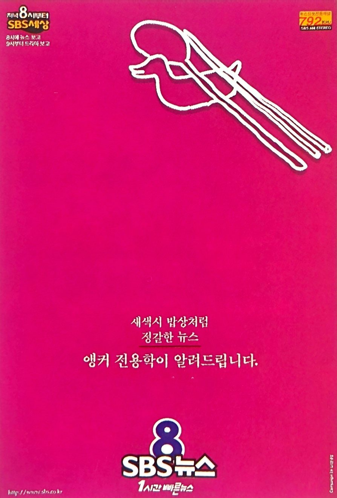
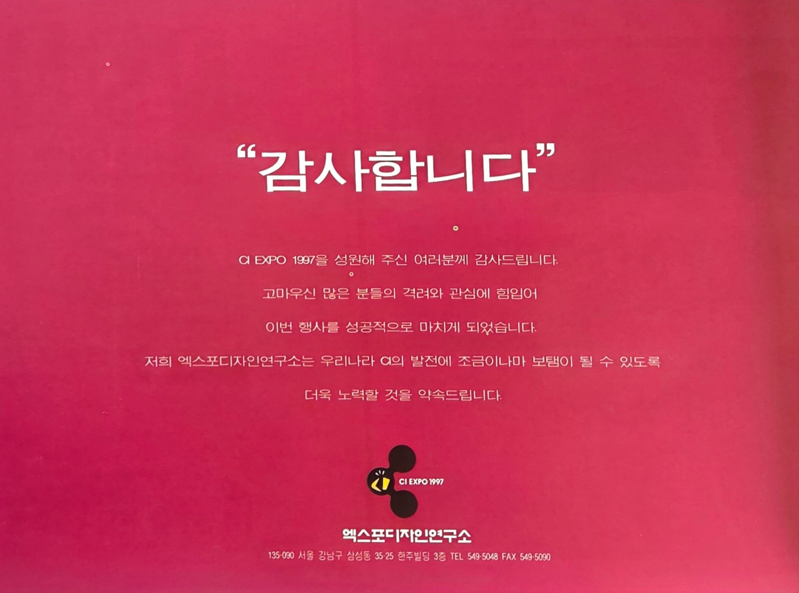
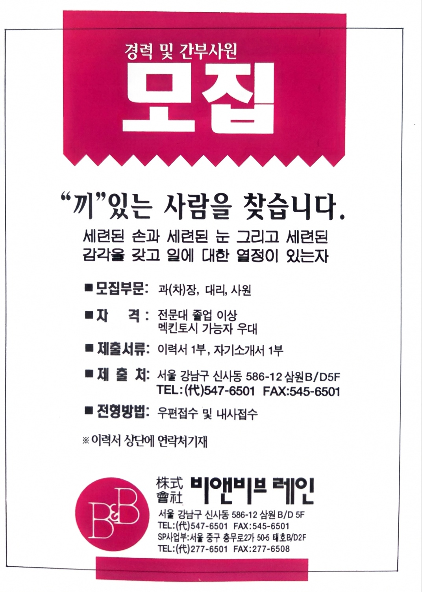

분홍 배경은 단순한 장식 요소가 아니라 광고의 주목도를 높이고, 정보를 구분하며, 브랜드 이미지를 형성하고, 미래적이고 감각적인 분위기를 만드는 시각적 장치로 활용되었다. 특히 글자에 사용된 분홍이 메시지 자체를 강조하는 역할을 했다면, 배경에 사용된 분홍은 정보를 담는 공간을 구획하고 광고 전체의 분위기와 시선의 흐름을 설계하는 역할을 수행한다 이를 통해 당시 한국 디자인이 강렬한 색면과 높은 채도의 컬러를 적극 활용하여 시각적 임팩트를 추구했음을 확인할 수 있다.